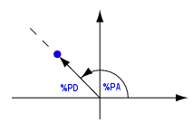
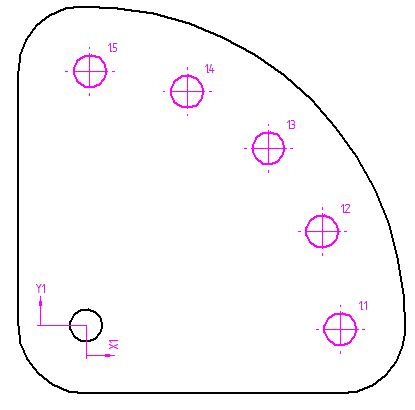

Adding hole table columns
The Columns tab in the Hole Table Properties dialog box is where you specify which hole data columns you want to include in the table.
Hole table column properties and values
Four columns are included in a hole table by default. They are the Hole, Size, X, and Y columns.
-
Use the Properties list to select additional property-text based columns to add to the hole table. You also can add columns for custom content, as well as columns to display "smart hole" properties for specific types of holes.
-
Use the Add Column and Remove Column buttons to add and remove columns from the hole table.
-
Use the Move Up and Move Down buttons to reorder the columns in the table.
-
You can combine multiple properties in a single column by copying and pasting the associated property text code.
|
These column properties (%property text code) |
Display this information |
|
Hole (%HN) |
Hole numbers based on the Options tab definition:
|
|
Size (%HS) |
Hole size based on what you select:
|
|
Diameter/Thread (%DT) |
Diameter of the hole based on what you select:
|
|
Count (%HQ) |
Total number of holes with the same parameters, as defined in the model, in the Hole Options dialog box. |
|
Type (%HT) |
Hole type, such as simple, counterbore, and threaded. For parts with circular cutouts instead of hole features, the type displays as Other. |
|
Hole Callout 1 (%F1) Hole Callout 2 (%F2) Hole Callout 3 (%F3) Hole Callout 4 (%F4) |
Feature callout information specific to a particular type of hole feature. For example, to show properties for countersink holes, you can add a Hole Callout 1 column to extract the countersink hole information. The %F1 property text references the contents of the Callout tab. To learn how to define a custom Hole Callout column, see Define a smart hole table column. Note:
Note:
These Hole Callout columns perform the same function as the Feature Callout command button , which is used to extract information for feature callout annotations.
|
|
Origin/Group (%ON) |
The origin number for a group of holes, when the hole table references more than one origin on the drawing view. |
|
Angle (%PA) |
Polar angle coordinate, which is the counterclockwise angle from the X axis.  |
|
Distance (%PD) |
Polar distance coordinate, which is the radial distance from the origin. |
|
X (%XP) |
Cartesian coordinate X distance from the hole table origin on the sheet. |
|
Y (%YP) |
Cartesian coordinate Y distance from the hole table origin on the sheet. |
|
User Defined (not based on property text) |
Custom column content. For example, you can define a column to contain special Notes. For more information, see Create a column for user-defined content. |

Hole size versus diameter
You can show the hole size or the hole diameter.
-
Use the Size column to show the size of 2D geometry.
-
Use the Diameter/Thread column to show the diameter of hole features and threaded hole features, as defined in the model, in the top portion of the Hole Options dialog box.
Use polar coordinates to specify hole location
You can show hole location using polar coordinates instead of Cartesian coordinates by adding the predefined columns for the Angle property and the Distance property, and removing the X and Y columns.

|
Hole |
Angle |
Distance |
Size |
|---|---|---|---|
|
1.1 |
0 deg |
50.08 mm |
6.35 mm |
|
1.2 |
22 deg |
50.08 mm |
6.35 mm |
|
1.3 |
45 deg |
50.08 mm |
6.35 mm |
|
1.4 |
68 deg |
50.08 mm |
6.35 mm |
|
1.5 |
90 deg |
50.08 mm |
6.35 mm |
Add a hole table column for notes
You can add a user-defined column to contain custom notes. First, select and add the User Defined property column using the Properties list, and then change the default name of the column in the Column Header box to Notes. In the Property text box, type or paste the property text or plain text that you want to appear in the Notes column.
To learn how to do this, see Create a column for user-defined content.
This Notes column provides plain text information about the hole fit.
|
Hole |
X |
Y |
Size |
Notes |
|---|---|---|---|---|
|
1.1 |
-100.21 mm |
12.57 mm |
10 mm |
Fit=Exact |
|
1.2 |
-76.88 mm |
12.57 mm |
10 mm |
Fit=Exact |
Add a prefix or suffix to a hole column
You can define a prefix or suffix to be displayed with the evaluated data in a column. First, select the column in the Columns list, and then type the information directly in the Property text box, using this format: prefix %HS suffix
-
If you type Drill Size= in front of the property text %HS, then this prefix will appear in front of the resolved property text value for hole size in the Size column.
-
You can append a suffix after each hole size value by pasting the property text for a symbol or typing text, such as (Thru All).
|
Hole |
X |
Y |
Size |
|---|---|---|---|
|
1.1 |
-100.21 mm |
12.57 mm |
Drill Size=10 mm (Thru All) |
|
1.2 |
-76.88 mm |
12.57 mm |
Drill Size=10 mm (Thru All) |
Show hole tolerance values
In both the Size and Diameter/Thread columns, you can apply property text formatting to specify that stack or limit tolerance is added to the evaluated value. To learn how to do this, see Show hole size tolerance.
Stack tolerance is shown on the size and diameter values in the last two columns, Size and Diameter/Thread.

Reference smart hole information in the Hole Callout columns
You can also use the Columns tab to add up to four Hole Callout columns to the hole table. The Hole Callout columns display predefined information for up to four different types of holes. As an example, you may want to show machining information for countersink holes in one column and threaded hole information in another.
To specify the type of information you want to extract from the model and show in the four Hole Callout columns, use the Callout tab along with the Smart Depth tab in the Hole Table Properties dialog box, and then save them for reuse in saved settings. When you place a hole table that includes a Hole Callout column, the hole geometry that you select determines which property text string is referenced to extract information from the part model. The entry in the hole table populates based on the data variables, template text, or other information you specified.

To learn how to define a Hole Callout column, see Define a smart hole table callout column.
How do I
Create a hole tableChange hole table labels
Define a smart hole table callout column
Hide the hole table origin
Show hole size tolerance
Learn more
Hole tablesLook up more details
Hole Table commandHole Table command bar
Hole Table Properties dialog box
Options tab (Hole Table Properties dialog box)
Hole Number tab (Hole Table Properties dialog box)
Callout tab
Smart Depth tab
Units tab (Hole Table Properties dialog box)